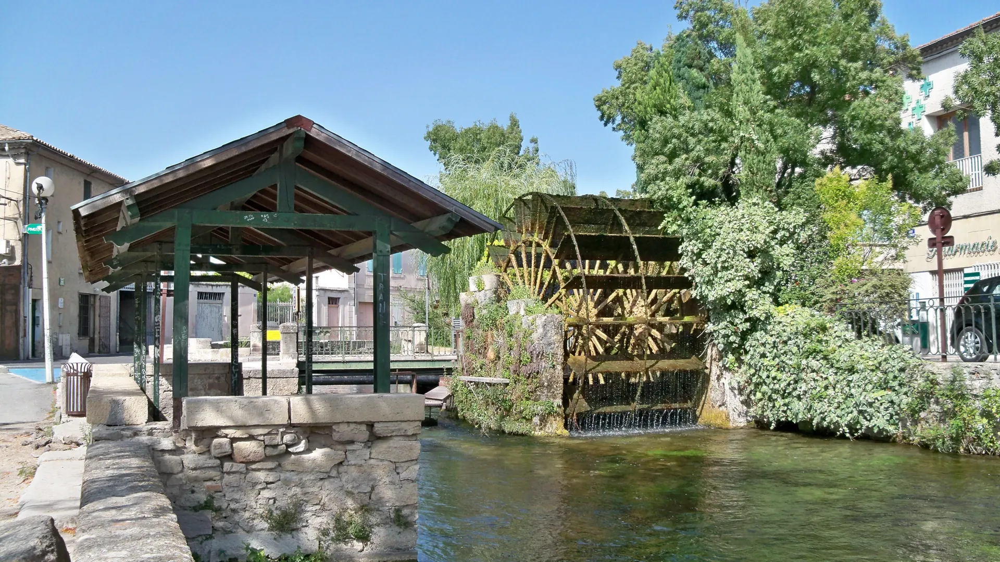

{kind=link}

Abbaye de Sénanque
1148년 깊은 협곡 속에 세워진 12세기 시토회(Cistercian) 로마네스크 수도원. 일체의 장식을 배제한 절대적 청빈의 중세 석조 건축과 현재도 이어지는 수도사들의 침묵 기도.

에메랄드빛 소르그(Sorgue) 강이 섬처럼 감싸 흐르는 '프로방스의 베네치아'. 이끼 낀 거대한 목조 물레바퀴(Roues à aubes), 300여 개 앤틱 상점이 밀집한 유럽 3대 골동품 도시이자 시인 르네 샤르의 고향.
보클뤼즈 샘(Fontaine-de-Vaucluse)에서 발원한 투명하고 차가운 에메랄드빛 소르그(Sorgue) 강줄기들이 그물망처럼 도시를 가르고 감싸며 흐르는 '콩타의 베네치아(La Venise Comtadine)'다.
중세 이래 풍부한 수력을 이용해 실크 방적과 모직물, 제지 산업을 꽃피웠던 15개의 유서 깊은 이끼 낀 목조 물레바퀴(Roues à aubes)가 강변을 따라 천천히 돌아가고 있다.
파리 생투앙(Saint-Ouen), 런던과 함께 유럽 3대 앤틱·골동품의 메카로 꼽히며, 마을 전체에 300여 개가 넘는 앤틱 갤러리와 골동품 마을(Villages d'antiquaires)이 상설 운영된다. 시인 르네 샤르(René Char)가 태어나고 자란 문학의 도시이기도 하다.
"뤼베롱의 건조한 석회암 언덕 마을들과 극적으로 대비되는 시원한 물의 도시이자 유럽 최고 수준의 앤틱 탐방지다." 강변을 따라 물레바퀴를 둘러보며 물가 테라스 카페에서 시원한 음료를 즐기고, 골동품 상점들과 17세기 바로크 노트르담 데 장주(Notre-Dame-des-Anges) 성당을 둘러보는 90~120분의 여유로운 산책을 즐기기에 가장 완벽하다.
| 항목 | 상세 정보 |
|---|---|
| 위치 | 84800 L'Isle-sur-la-Sorgue, Vaucluse |
| 마을 입장/요금 | 연중 상시 개방 / 무료 |
| 추천 주차장 | Parking du Bassin / Parking de la Poste (시내 접근 용이) 또는 Parking Grand Jardin (무료/유료 주차장) |
| 일요 시장 (⚠ 필수 주의) | 매주 일요일 오전 08:00–14:00: 프로방스 최대 규모의 종합 전통 시장 및 앤틱 벼룩시장이 열림. 일요일 오전에는 시내 전역이 극도로 혼잡하므로 시장 목적이 아니라면 평일 방문을 적극 권장함 |
| 연계 동선 | Coustellet에서 차로 12분, Gordes에서 차로 20분, Avignon에서 차로 30분 거리로 이동일 경유지로 최적 |
1148년 깊은 협곡 속에 세워진 12세기 시토회(Cistercian) 로마네스크 수도원. 일체의 장식을 배제한 절대적 청빈의 중세 석조 건축과 현재도 이어지는 수도사들의 침묵 기도.

뤼베롱 산맥 북사면에 층층이 솟아오른 가장 낙차가 큰 계단식 언덕 마을. 해발 425m 옛 성당(Vieille Église) 정상 테라스에서 맞은편 라코스트(Lacoste) 성채와 계곡 전체를 굽어보는 압도적 파노라마.

뤼베롱 현지 농부들이 직접 재배하고 만든 신선 농산물과 특산품만 판매하는 프랑스 공인 정통 생산자 직거래 일요 시장(Marché Paysan). 뤼베롱 농가 체류의 최고의 식재료 보급 거점.

보클뤼즈 고원 가장자리 백색 석회암 절벽 위에 층층이 솟아오른 뤼베롱 최고의 요새 마을. 마을 진입로에서 마주하는 압도적인 파노라마 전경과 11세기 중세 르네상스 성채.

대형 관광버스가 닿지 않아 뤼베롱에서 가장 고요하고 평화로운 '숨겨진 보석' 마을. 언덕 정상의 17세기 예루살렘 풍차(Moulin de Jérusalem)와 현지인들의 정겨운 일상이 살아있는 골목길.

알베르 카뮈가 영면한 뤼베롱 남부의 평탄하고 세련된 예술 마을. 프로방스 최초의 르네상스 성(Château de Lourmarin), 플라타너스 그늘 아래 카페 테라스, 로즈마리에 덮인 소박한 카뮈의 묘소.